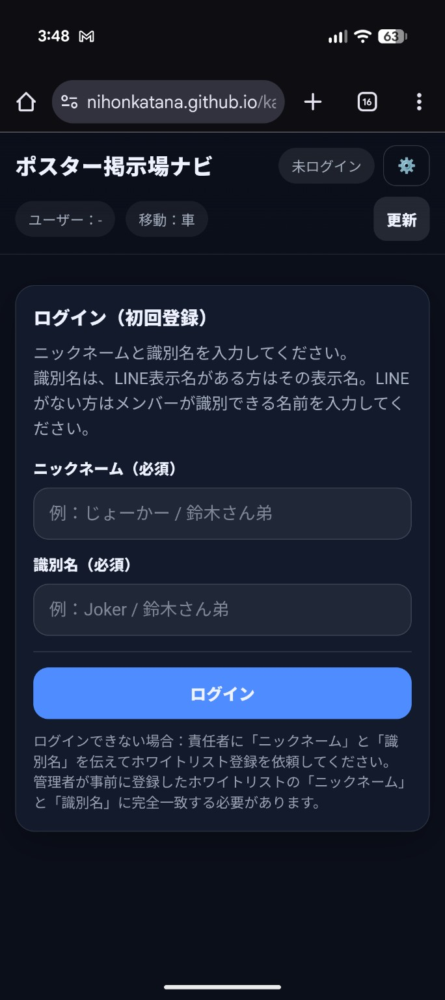
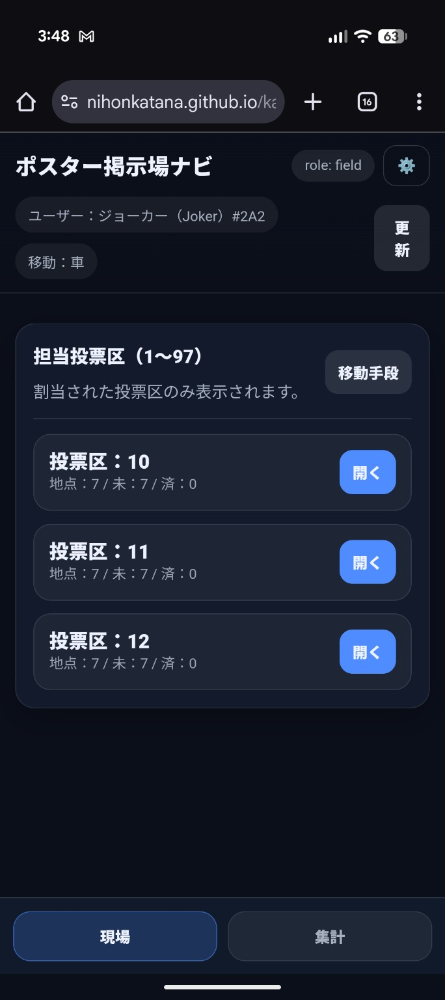
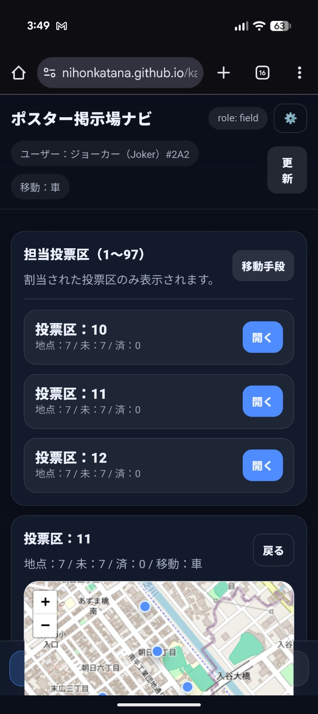
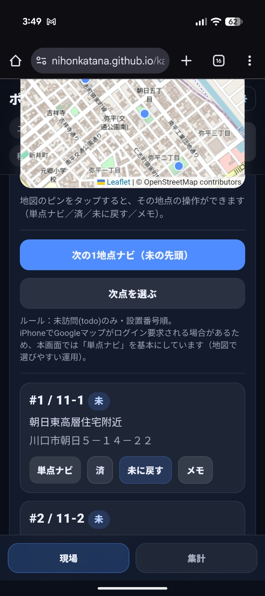
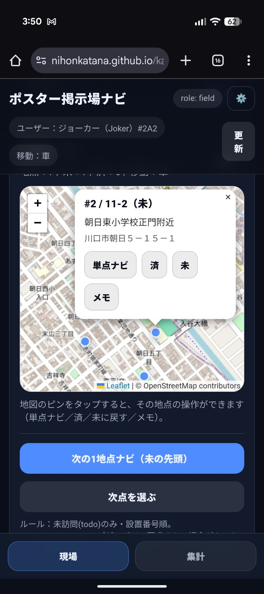

ポスター掲示場ナビ：
現場向け簡易操作説明書
スマホで使う前提の、最短手順です。
STEP1 ログイン
STEP2 投票区を開く
STEP3 地点一覧
STEP4 操作（単点ナビ/済/未/メモ）
STEP5 地図のピン操作
先に結論（現場の基本動作）
1) ログイン → 2) 担当の投票区を開く → 3) 「単点ナビ」で移動 → 4) 終わったら「済」 → 必要なら「メモ」
※ナビは別タブで開く運用（推奨）なので、戻るのが簡単です。
1
ログイン（初回登録）
「ニックネーム」と「識別名」を入力して、
ログイン
します。
識別名は、
LINE表示名がある人はその表示名
。LINEが無い人は他のメンバーが識別できる名前を入れてください。
ログインできない場合は、責任者に「ニックネーム」「識別名」を伝えてホワイトリスト登録を依頼してください。

STEP1：ログイン画面。ニックネームと識別名を入力してログインします。
2
担当投票区（1〜97）から、投票区を開く
自分に割り当てられた投票区だけが一覧に出ます。
行の右側にある
「開く」
を押すと、その投票区の画面に入ります。

STEP2：担当投票区一覧。「開く」から投票区に入ります。
3
投票区を開いた画面（地図＋地点リスト）
投票区の中にある掲示場（地点）が、下のリストに並びます。
地図は「ピン」を押して操作できます（STEP5参照）。

STEP3：投票区の詳細画面。地図と地点リストが表示されます。
TIP：不慣れな人は、まずリストから「単点ナビ」→終わったら「済」でOKです。
4
地点の操作（単点ナビ / 済 / 未 / メモ）
単点ナビ
：その地点へナビを開始します（別タブ/別アプリで開きます）。
済
：貼り終えたら「済」にします。
未に戻す
：誤操作したら「未」に戻します。
メモ
：状況を書いて残します（例：撤去済／破損／空き無し など）。

STEP4：地点カードの操作。基本は「単点ナビ」→「済」→必要なら「メモ」。
5
地図のピンを押して操作（地図だけで次点を選ぶ）
地図上のピンを押すと、その地点の小メニューが出ます。
ここからも
単点ナビ / 済 / 未 / メモ
が操作できます。
リストより地図で選びたい人は、この使い方が便利です。

STEP5：地図のピンを押すと、その地点の操作ができます。